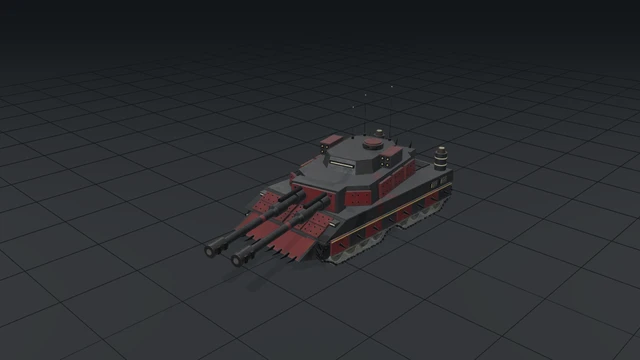

MAMMOTH MK-V
Peleador de asedio superpesado armado con cañones gemelos BOSS_DUAL y un contenedor de ATGM guiados en la torreta, además de APS a bordo contra los misiles del jugador. Al 50% de PV activa un escudo de fase de 2s, entra en sobrecarga de ciudadela y llama a una escolta blindada.
Contraataque: Provoca su salva de ATGM o agota las cargas de su APS y luego flanquéalo aprovechando que su casco gira despacio.